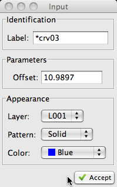

Arc Radius
The
Arc Radius function allows the operator to create an
arc by specifying its criteria: radius, start angle and end angle. The operator may
either
Select
existing points,
Indicate
new points,
Key
values
or any combination thereof to specify the criteria.
Step by Step
Step 1 of 4:
Select or
Indicate the center
point of the arc
|
The initial step in the process is to select the center point of the arc.
This can be accomplished by any of three different methods:
- Selecting an existing point
- Indicating a new point (free hand)
- Entering the (x,y) coordinate
Step 2 of 4:
Select or
Indicate the end
point or
Key or
the radius of the arc
|
The second step is to set the radius of the arc.
This may be accomplished by any of three different methods:
- Selecting an existing point
- Indicating a new point (free hand)
- Entering the radius value
Step 3 of 4:
Select or
Indicate the start
point or
Key or
the start angle of the arc
|
The third step is to set the start angle of the arc.
This may be accomplished by any of three different methods:
- Selecting an existing point
- Indicating a new point (free hand)
- Entering the start angle (in degrees)
Step 4 of 4:
Select or
Indicate the end
point or
Key or
the end angle of the arc
|
The final step is to set the end angle of the arc.
This may be accomplished by any of three different methods:
- Selecting an existing point
- Indicating a new point (free hand)
- Entering the end angle (in degrees)
Optional
| The Input Dialog may be used to modify the label,
color, layer, or line pattern of the curve prior to its creation. |
 |